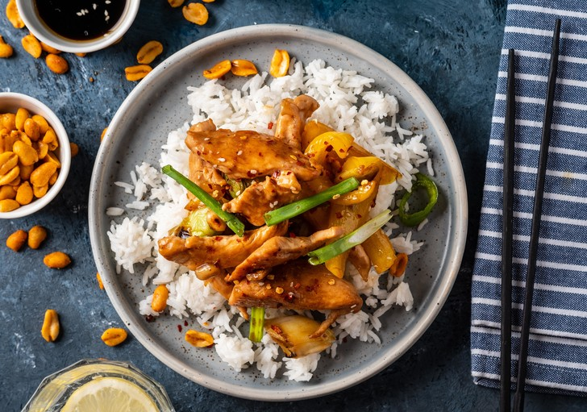
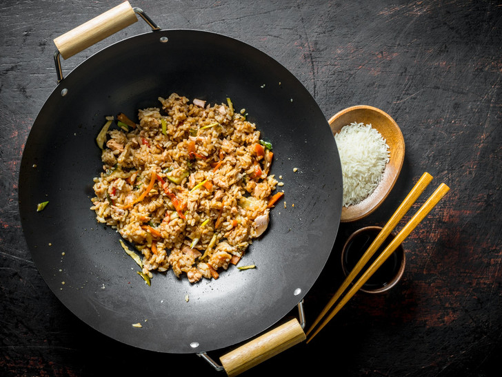
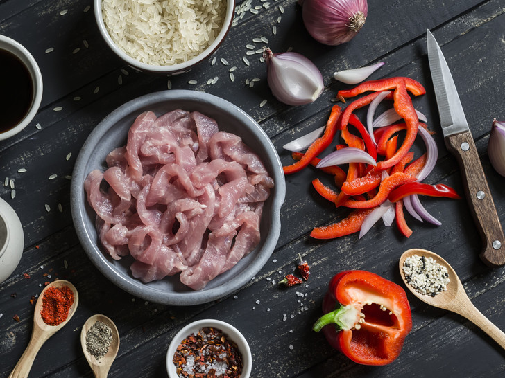
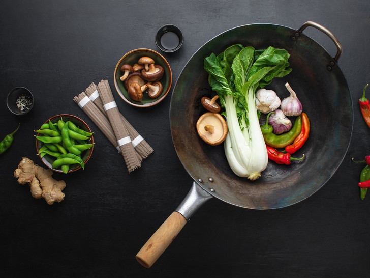
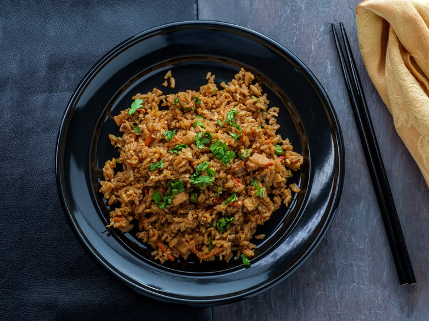

Рис в китайском стиле: простой рецепт, который вы полюбите
[Рецепты китайской кухни]Думаете, что приготовить на обед или ужин? Рис с курицей в китайском стиле — полноценное блюдо, не требующее дополнений, а не просто гарнир. Его приготовление займет не больше часа, а вкус обязательно порадует вас и ваших близких.

Рис может быть не только гарниром, но и основой полноценного блюда, которое разнообразит ваше повседневное меню. Впрочем, приготовить угощение в китайском стиле значительно сложнее, чем просто сварить рис, но результат определенно порадует вас и ваших близких. Стоит только запастись широким спектром ингредиентов, сковородой вок и часом времени на подготовку и приготовление заманчивого азиатского блюда.
История ВОК
Вок отличается от обычной европейской сковороды. В Китае принято обрабатывать продукты как можно быстрее, но при максимальных температурах, что позволяет сохранять основные свойства ингредиентов и добиваться нужного вкуса. Поэтому для приготовления блюд китайской кухни стоит вооружиться подходящей посудой. Вок позволяет придерживаться техники стир фрай — то есть быстро обжаривать продукты в горячем масле, постоянно перемешивая их.

Также китайская кухня требует внимательного расчета времени, чтобы все ингредиенты были добавлены в правильное время и не пережарились. Новички могут облегчить себе задачу и приготовить жареный рис с курицей и яйцом, действуя поэтапно и используя отдельную кастрюлю для яиц, чтобы получился рис с курицей в китайском стиле, а не омлет с вкраплениями риса.
Подготовка ингридиентов
На подготовку ингредиентов отведите 10 минут, на саму готовку полчаса и приплюсуйте 20 минут на приготовление риса. Его
лучше сварить заранее, так как теплый рис будет липнуть к сковороде, мешая вам. Он остынет быстрее, если равномерно
распределить его по противню.
Помните, что вы можете увеличить объем ингредиентов, соблюдая пропорции, если хотите приготовить угощение не на один
вечер или на компанию побольше.

Для четырех порций риса с курицей в китайском стиле понадобится:
- 600 г холодного вареного риса
- 300 г филе куриных бедрышек (нарезанных небольшими кусочками)
- 4 больших яйца
- 3 ½ столовые ложки арахисового растительного масла для жарки
- 2 чайные ложки кунжутного масла
- 1 столовая ложка китайского соуса или пасты из бобов чили
- 300 г каштановых грибов (нарезанных)
- 175 г савойской или белокочанной капусты
- (с удаленными жесткими сердцевинами, нарезанные узкими ломтиками)
- 4 зеленые луковицы (нарезанных)
- 3 лука-шалота (нарезанных)
- 250 г пак-чой (тщательно промытых и нарезанных)
- 4 зубчика чеснока (мелко нарезанных)
- 3-сантиметровый кусочек корня имбиря (очищенный и натертый на терке)
- 5 столовых ложек шаосинского вина или сухого хереса (по желанию)
- соевый соус и масло чили или соус чили для подачи (по желанию)

Приготовление
- Начать необходимо, разогрев посуду до высокой температуры и включив вытяжку. Подогрейте 1 столовую ложку масла для жарки в воке. Когда оно станет очень горячим, добавьте грибы и быстро обжарьте их, чтобы они подрумянились. Затем приправьте их. Грибы будут выделять воду, так что убедитесь, что она испарилась, прежде чем снять сковороду с огня и переложить их в миску.
- В том же воке разогрейте 1,5 столовые ложки масла для жарки и поместите в него нарезанные лук-шалот, чеснок, капусту, белые кусочки зеленого лука и имбирь. Помешивая, обжаривайте их на высоком огне в течение минуты, а затем добавьте мелко нарезанную курицу. Она должна равномерно подрумяниться и прожариться внутри. Приправьте курицу по вкусу и жарьте ее, помешивая, в течение двух минут. Затем добавьте в вок пак-чой и готовьте смесь еще минуту. Затем все содержимое вока добавьте в миску к уже готовым грибам.
- Возьмите новую миску и смешайте в ней яйца с солью и кунжутным маслом. Нагрейте половину оставшегося масла в новой сковороде и приготовьте яйца, как омлет, наклоняя сковороду и отталкивая приготовленное яйцо от себя, чтобы сырое яйцо вытекало на горячую сковороду.
- Теперь налейте оставшееся арахисовое масло в вок и нагрейте до очень горячего состояния. Добавьте в него рис и жарьте, помешивая его, в течение 3 минут или пока вы не увидите, как он зарумянивается, и не почувствуете запах поджаренного риса. Приправьте его, а потом добавьте обратно в вок все приготовленные ингредиенты, находящиеся в отдельной миске, а также яйцо и пасту чили.
- Если хотите, добавьте в блюдо шаосинское вино или сухой херес и перемешайте смесь. Подавайте рис с курицей в китайском стиле вместе с зелеными кусочками лука или другой подходящей зеленью сверху. Также поставьте на стол соевый соус, масло чили или соус чили по вашему выбору (впрочем, от использования всех этих ингредиентов можно спокойно отказаться).
